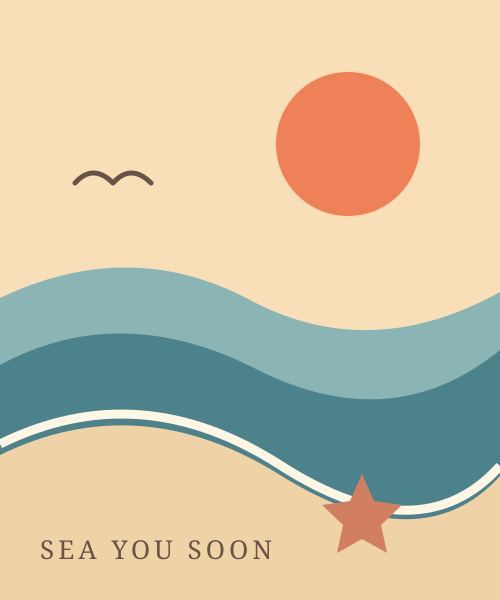
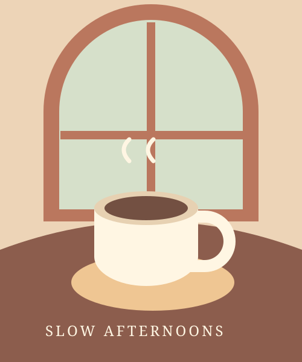
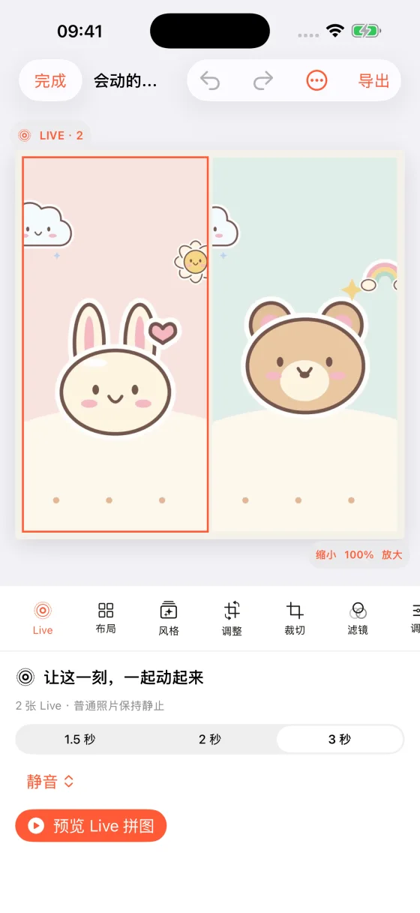
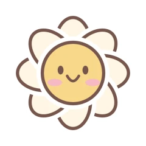
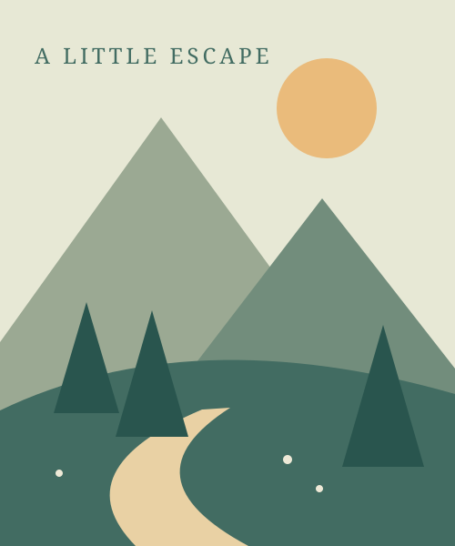
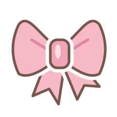
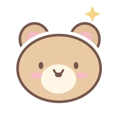
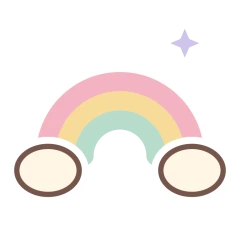

从相册，直接开始
在苹果相册多选照片，通过分享菜单打开极拼。想拼的那一刻，就开始。
看看怎么操作为 iPhone 里的小日子而做
把旅行、日常和喜欢的人，拼成一张有温度的照片。
连 Live 里的风和笑意，也一起留下。
A little collage. A lovely memory.




01 / MAKE IT YOURS
整齐一点，随性一点，或是仪式感多一点。
选一种心情，让照片找到自己的位置。
THE LITTLE THINGS

把日子，过成喜欢的样子。MY ORDINARY, LOVELY DAYS

网页排版示意 · 在 App 中使用你的照片
从简单的两张，到满满一屏的回忆。选一个模板，轻轻调整，就能拼得整整齐齐。
照片会变，喜欢的样子由你决定。
02 / KEEP THE MOMENT ALIVE
有些回忆，不该停在一帧。
把几张 Live Photo 和普通照片放在一起，
保存后，在苹果相册长按，就能重温。
网页播放的是动态效果示意。原生 Live 成品需在 iPhone App 中保存。
分享后是否保留动态，取决于接收 App 的支持情况。
03 / A LITTLE EXTRA CUTE
小兔、蝴蝶结、一朵笑脸小花。
也有闪电和星球，留给酷一点的心情。
用原创贴纸和装饰边框，
把一张照片，变成你的生活手帐。
先在这里玩一下
点选贴纸，再拖动摆放。
键盘也可以：Tab 选中，方向键移动。
今天，也有好好生活。little moments, big feelings.
试着点一张贴纸吧
05 / OUR LITTLE STORY
极拼从一个很小的想法开始：
让 iPhone 里的照片，更轻松地待在一起。
后来，给它添上了贴纸、边框，也让 Live 里的瞬间继续动起来。
一个独立开发者，和一个慢慢长大的小 App。

V1.0模板、自由、海报、长图
从四种基础玩法出发

V2.0布局推荐与编辑打磨
让创作少一点费力
原创贴纸和装饰边框
小日子也有自己的风格
原生 Live Photo 拼图
留住静态之外的美好
更多好用的小细节
也期待听到你的想法
MADE FOR YOUR LITTLE MOMENTS
下一张喜欢的拼图，就从你的相册开始。
公开下载入口准备中，开放后会在这里更新。
适用于 iPhone · iOS 17 或更新版本
会。导入完整 Live Photo 后，在极拼主 App 中生成并选择“保存 Live 到相册”，成品就是原生 Live Photo。在苹果“照片”里长按即可播放。通过其他 App 分享时，能否保留动态取决于对方是否支持。查看 Live 操作步骤
可以。Live Photo 和普通照片可以混排，播放时 Live 区域保持动态，普通照片保持静止。也可以只使用普通照片，导出静态拼图。
不需要向开发者上传。照片导入后，编辑和拼图生成在设备本机完成。如果原图只存储在 iCloud，系统需要先联网下载；你主动分享成品时，内容会交给你选择的 App。查看隐私政策
安装极拼后，在苹果相册多选 2–9 张照片，点分享，再选择“极拼”即可快拼。扩展直接导出静态图，完整的 Live 编辑与导出需要回到极拼主 App 中完成。查看相册入口说明